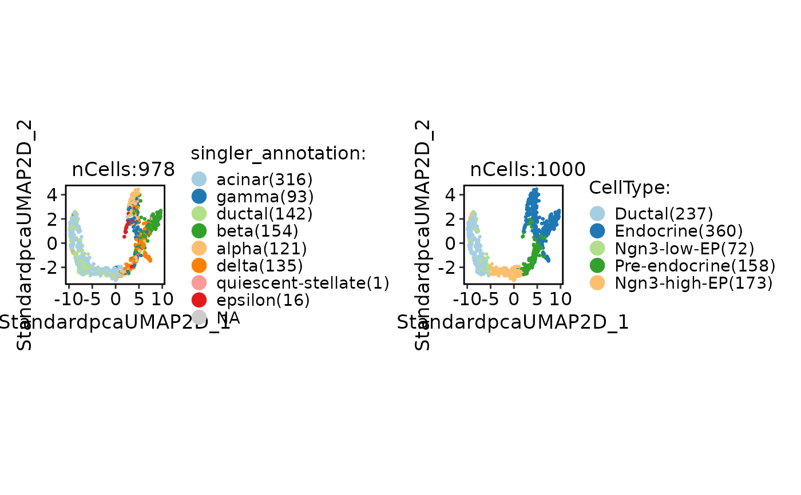
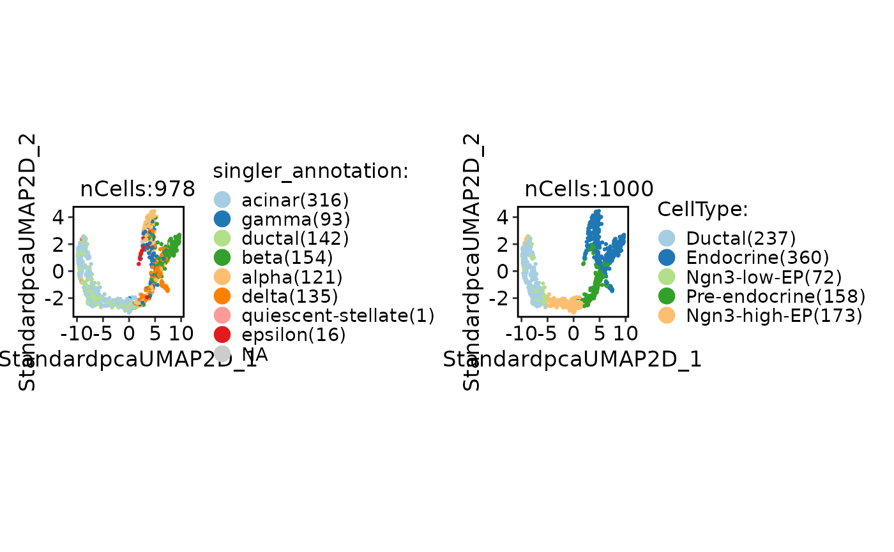

Annotate single cells using SingleR
Usage
RunSingleR(
srt_query,
srt_ref,
query_group = NULL,
ref_group = NULL,
query_assay = "RNA",
ref_assay = "RNA",
genes = "de",
de.method = "wilcox",
sd.thresh = 1,
de.n = NULL,
aggr.ref = FALSE,
aggr.args = list(),
quantile = 0.8,
fine.tune = TRUE,
tune.thresh = 0.05,
prune = TRUE,
cores = 1,
verbose = TRUE
)Arguments
- srt_query
An object of class Seurat to be annotated with cell types.
- srt_ref
An object of class Seurat storing the reference cells.
- query_group
A character vector specifying the column name in the `srt_query` metadata that represents the cell grouping.
- ref_group
A character vector specifying the column name in the `srt_ref` metadata that represents the cell grouping.
- query_assay
A character vector specifying the assay to be used for the query data. Defaults to the default assay of the `srt_query` object.
- ref_assay
A character vector specifying the assay to be used for the reference data. Defaults to the default assay of the `srt_ref` object.
- genes
"genes" parameter in SingleR function.
- de.method
"de.method" parameter in SingleR function.
- sd.thresh
Deprecated and ignored.
- de.n
An integer scalar specifying the number of DE genes to use when
genes="de". Ifde.method="classic", defaults to500 * (2/3) ^ log2(N)whereNis the number of unique labels. Otherwise, defaults to 10. Ignored ifgenesis a list of markers/DE genes.- aggr.ref, aggr.args
Arguments controlling the aggregation of the references prior to annotation, see
trainSingleR.- quantile
"quantile" parameter in SingleR function.
- fine.tune
"fine.tune" parameter in SingleR function.
- tune.thresh
"tune.thresh" parameter in SingleR function.
- prune
"prune" parameter in SingleR function.
Examples
data(panc8_sub)
# Simply convert genes from human to mouse and preprocess the data
genenames <- make.unique(
thisutils::capitalize(
rownames(panc8_sub),
force_tolower = TRUE
)
)
names(genenames) <- rownames(panc8_sub)
panc8_sub <- RenameFeatures(
panc8_sub,
newnames = genenames
)
#> ℹ [2025-08-17 10:51:50] Rename features for the assay: RNA
panc8_sub <- check_srt_merge(
panc8_sub,
batch = "tech"
)[["srt_merge"]]
#> ℹ [2025-08-17 10:51:50] Spliting `srt_merge` into `srt_list` by column "tech"...
#> ℹ [2025-08-17 10:51:51] Checking srt_list...
#> ℹ [2025-08-17 10:51:52] Data is log-normalized
#> ℹ [2025-08-17 10:51:52] Data 1/5 of the `srt_list` has been log-normalized
#> ℹ [2025-08-17 10:51:52] Perform `Seurat::FindVariableFeatures()` on the data 1/5 of the `srt_list`...
#> ℹ [2025-08-17 10:51:52] Data is log-normalized
#> ℹ [2025-08-17 10:51:52] Data 2/5 of the `srt_list` has been log-normalized
#> ℹ [2025-08-17 10:51:52] Perform `Seurat::FindVariableFeatures()` on the data 2/5 of the `srt_list`...
#> ℹ [2025-08-17 10:51:53] Data is log-normalized
#> ℹ [2025-08-17 10:51:53] Data 3/5 of the `srt_list` has been log-normalized
#> ℹ [2025-08-17 10:51:53] Perform `Seurat::FindVariableFeatures()` on the data 3/5 of the `srt_list`...
#> ℹ [2025-08-17 10:51:53] Data is log-normalized
#> ℹ [2025-08-17 10:51:53] Data 4/5 of the `srt_list` has been log-normalized
#> ℹ [2025-08-17 10:51:53] Perform `Seurat::FindVariableFeatures()` on the data 4/5 of the `srt_list`...
#> ℹ [2025-08-17 10:51:54] Data is log-normalized
#> ℹ [2025-08-17 10:51:54] Data 5/5 of the `srt_list` has been log-normalized
#> ℹ [2025-08-17 10:51:54] Perform `Seurat::FindVariableFeatures()` on the data 5/5 of the `srt_list`...
#> ℹ [2025-08-17 10:51:54] Use the separate HVF from srt_list
#> ℹ [2025-08-17 10:51:54] Number of available HVF: 2000
#> ℹ [2025-08-17 10:51:55] Finished checking.
# Annotation
data(pancreas_sub)
pancreas_sub <- standard_scop(pancreas_sub)
#> ℹ [2025-08-17 10:51:59] Start scop standard workflow...
#> ℹ [2025-08-17 10:51:59] Checking srt_list...
#> ℹ [2025-08-17 10:52:00] Data is log-normalized
#> ℹ [2025-08-17 10:52:00] Data 1/1 of the `srt_list` has been log-normalized
#> ℹ [2025-08-17 10:52:00] Perform `Seurat::FindVariableFeatures()` on the data 1/1 of the `srt_list`...
#> ℹ [2025-08-17 10:52:00] Use the separate HVF from srt_list
#> ℹ [2025-08-17 10:52:00] Number of available HVF: 2000
#> ℹ [2025-08-17 10:52:01] Finished checking.
#> ℹ [2025-08-17 10:52:01] Perform `Seurat::ScaleData()` on the data...
#> ℹ [2025-08-17 10:52:01] Perform pca linear dimension reduction on the data...
#> ℹ [2025-08-17 10:52:01] `linear_reduction` pca is already existed. Skip calculation
#> ℹ [2025-08-17 10:52:01] Perform `Seurat::FindClusters()` with louvain and `cluster_resolution` = 0.6 on the data...
#> ℹ [2025-08-17 10:52:01] Reorder clusters...
#> ! [2025-08-17 10:52:01] Using `Seurat::AggregateExpression()` to calculate pseudo-bulk data for <Assay5>
#> ℹ [2025-08-17 10:52:02] Perform umap nonlinear dimension reduction on the data...
#> ℹ [2025-08-17 10:52:02] Non-linear dimensionality reduction (umap) using (Standardpca) dims (1-50) as input
#> ℹ [2025-08-17 10:52:06] Non-linear dimensionality reduction (umap) using (Standardpca) dims (1-50) as input
#> ✔ [2025-08-17 10:52:10] Run scop standard workflow done
pancreas_sub <- RunSingleR(
srt_query = pancreas_sub,
srt_ref = panc8_sub,
query_group = "Standardpca_SNN_res.0.6",
ref_group = "celltype"
)
#> ℹ [2025-08-17 10:52:10] Start SingleR annotation
#> ℹ [2025-08-17 10:52:11] Installing package: scrapper...
#>
#> → Will install 19 packages.
#> → All 19 packages (0 B) are cached.
#> + BiocGenerics 0.54.0 [bld]
#> + BiocNeighbors 2.2.0 [bld][cmp]
#> + DelayedArray 0.34.1 [bld][cmp]
#> + IRanges 2.42.0 [bld][cmp]
#> + MatrixGenerics 1.20.0 [bld]
#> + Rigraphlib 1.0.0 [bld][cmp]
#> + S4Arrays 1.8.1 [bld][cmp]
#> + S4Vectors 0.46.0 [bld][cmp]
#> + SparseArray 1.8.1 [bld][cmp]
#> + XVector 0.48.0 [bld][cmp]
#> + abind 1.4-8
#> + assorthead 1.2.0 [bld]
#> + beachmat 2.24.0 [bld][cmp]
#> + biocmake 1.0.1 [bld]
#> + crayon 1.5.3
#> + dir.expiry 1.16.0 [bld]
#> + filelock 1.0.3
#> + matrixStats 1.5.0
#> + scrapper 1.2.1 [bld][cmp]
#>
#> ℹ No downloads are needed, 19 pkgs are cached
#> ✔ Got BiocGenerics 0.54.0 (source) (56.09 kB)
#> ✔ Got biocmake 1.0.1 (source) (228.04 kB)
#> ✔ Got BiocNeighbors 2.2.0 (source) (336.67 kB)
#> ✔ Got filelock 1.0.3 (x86_64-pc-linux-gnu-ubuntu-24.04) (24.70 kB)
#> ✔ Got beachmat 2.24.0 (source) (377.29 kB)
#> ✔ Got abind 1.4-8 (x86_64-pc-linux-gnu-ubuntu-24.04) (64.92 kB)
#> ✔ Got crayon 1.5.3 (x86_64-pc-linux-gnu-ubuntu-24.04) (163.30 kB)
#> ✔ Got dir.expiry 1.16.0 (source) (308.47 kB)
#> ✔ Got DelayedArray 0.34.1 (source) (814.24 kB)
#> ✔ Got SparseArray 1.8.1 (source) (467.24 kB)
#> ✔ Got XVector 0.48.0 (source) (67.89 kB)
#> ✔ Got IRanges 2.42.0 (source) (483.03 kB)
#> ✔ Got MatrixGenerics 1.20.0 (source) (31.97 kB)
#> ✔ Got S4Arrays 1.8.1 (source) (294.50 kB)
#> ✔ Got matrixStats 1.5.0 (x86_64-pc-linux-gnu-ubuntu-24.04) (474.75 kB)
#> ✔ Got assorthead 1.2.0 (source) (1.83 MB)
#> ✔ Got S4Vectors 0.46.0 (source) (1.07 MB)
#> ✔ Got scrapper 1.2.1 (source) (893.37 kB)
#> ✔ Got Rigraphlib 1.0.0 (source) (4.53 MB)
#> ℹ Building assorthead 1.2.0
#> ℹ Building BiocGenerics 0.54.0
#> ✔ Installed abind 1.4-8 (74ms)
#> ✔ Installed crayon 1.5.3 (124ms)
#> ✔ Installed filelock 1.0.3 (503ms)
#> ℹ Building dir.expiry 1.16.0
#> ✔ Installed matrixStats 1.5.0 (506ms)
#> ℹ Building MatrixGenerics 1.20.0
#> ✔ Built dir.expiry 1.16.0 (1.8s)
#> ✔ Installed dir.expiry 1.16.0 (35ms)
#> ℹ Building biocmake 1.0.1
#> ✔ Built assorthead 1.2.0 (4.8s)
#> ✔ Built BiocGenerics 0.54.0 (4.8s)
#> ✔ Built biocmake 1.0.1 (2.2s)
#> ✔ Installed assorthead 1.2.0 (91ms)
#> ℹ Building BiocNeighbors 2.2.0
#> ✔ Installed BiocGenerics 0.54.0 (76ms)
#> ℹ Building S4Vectors 0.46.0
#> ✔ Installed biocmake 1.0.1 (61ms)
#> ℹ Building Rigraphlib 1.0.0
#> ✔ Built MatrixGenerics 1.20.0 (4.3s)
#> ✔ Installed MatrixGenerics 1.20.0 (60ms)
#> ✔ Built S4Vectors 0.46.0 (20.4s)
#> ✔ Installed S4Vectors 0.46.0 (54ms)
#> ℹ Building IRanges 2.42.0
#> ✔ Built BiocNeighbors 2.2.0 (38.5s)
#> ✔ Installed BiocNeighbors 2.2.0 (1.1s)
#> ✔ Built IRanges 2.42.0 (42.3s)
#> ✔ Installed IRanges 2.42.0 (43ms)
#> ℹ Building S4Arrays 1.8.1
#> ℹ Building XVector 0.48.0
#> ✔ Built XVector 0.48.0 (10.4s)
#> ✔ Installed XVector 0.48.0 (1s)
#> ✔ Built S4Arrays 1.8.1 (12.9s)
#> ✔ Installed S4Arrays 1.8.1 (1s)
#> ℹ Building SparseArray 1.8.1
#> ✔ Built SparseArray 1.8.1 (20.1s)
#> ✔ Installed SparseArray 1.8.1 (47ms)
#> ℹ Building DelayedArray 0.34.1
#> ✔ Built DelayedArray 0.34.1 (16.8s)
#> ✔ Installed DelayedArray 0.34.1 (1s)
#> ℹ Building beachmat 2.24.0
#> ✔ Built Rigraphlib 1.0.0 (2m 45.7s)
#> ✔ Installed Rigraphlib 1.0.0 (1.3s)
#> ✔ Built beachmat 2.24.0 (3m 12.1s)
#> ✔ Installed beachmat 2.24.0 (1.5s)
#> ℹ Building scrapper 1.2.1
#> ✔ Built scrapper 1.2.1 (3m 58s)
#> ✔ Installed scrapper 1.2.1 (1.7s)
#> ✔ 1 pkg + 22 deps: kept 4, added 19, dld 19 (12.52 MB) [9m 16.2s]
#> ℹ [2025-08-17 11:01:27] Data is log-normalized
#> ℹ [2025-08-17 11:01:27] Detected srt_query data type: "log_normalized_counts"
#> ℹ [2025-08-17 11:01:29] Data is log-normalized
#> ℹ [2025-08-17 11:01:29] Detected srt_ref data type: "log_normalized_counts"
#> ℹ [2025-08-17 11:01:30] Perform "SingleRCluster" on the data...
#> ✔ [2025-08-17 11:01:31] SingleR annotation completed
CellDimPlot(
pancreas_sub,
group.by = c("singler_annotation", "CellType")
)
#> Warning: No shared levels found between `names(values)` of the manual scale and the
#> data's fill values.
#> Warning: No shared levels found between `names(values)` of the manual scale and the
#> data's fill values.
 pancreas_sub <- RunSingleR(
srt_query = pancreas_sub,
srt_ref = panc8_sub,
query_group = NULL,
ref_group = "celltype"
)
#> ℹ [2025-08-17 11:01:32] Start SingleR annotation
#> ℹ [2025-08-17 11:01:32] Data is log-normalized
#> ℹ [2025-08-17 11:01:32] Detected srt_query data type: "log_normalized_counts"
#> ℹ [2025-08-17 11:01:34] Data is log-normalized
#> ℹ [2025-08-17 11:01:34] Detected srt_ref data type: "log_normalized_counts"
#> ℹ [2025-08-17 11:01:36] Perform "SingleRCell" on the data...
#> ✔ [2025-08-17 11:01:40] SingleR annotation completed
CellDimPlot(
pancreas_sub,
group.by = c("singler_annotation", "CellType")
)
#> Warning: No shared levels found between `names(values)` of the manual scale and the
#> data's fill values.
#> Warning: No shared levels found between `names(values)` of the manual scale and the
#> data's fill values.

pancreas_sub <- RunSingleR(
srt_query = pancreas_sub,
srt_ref = panc8_sub,
query_group = NULL,
ref_group = "celltype"
)
#> ℹ [2025-08-17 11:01:32] Start SingleR annotation
#> ℹ [2025-08-17 11:01:32] Data is log-normalized
#> ℹ [2025-08-17 11:01:32] Detected srt_query data type: "log_normalized_counts"
#> ℹ [2025-08-17 11:01:34] Data is log-normalized
#> ℹ [2025-08-17 11:01:34] Detected srt_ref data type: "log_normalized_counts"
#> ℹ [2025-08-17 11:01:36] Perform "SingleRCell" on the data...
#> ✔ [2025-08-17 11:01:40] SingleR annotation completed
CellDimPlot(
pancreas_sub,
group.by = c("singler_annotation", "CellType")
)
#> Warning: No shared levels found between `names(values)` of the manual scale and the
#> data's fill values.
#> Warning: No shared levels found between `names(values)` of the manual scale and the
#> data's fill values.
